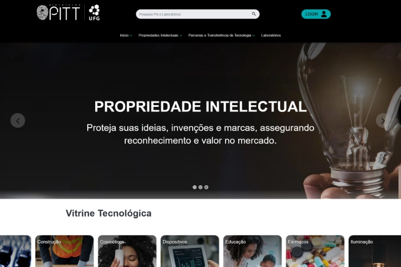

Ecossistema com sites institucionais, portais temáticos e
sistema interno, com atuação em Joomla e WordPress,
focando padronização visual, evolução contínua, performance e sustentação.
Foco do ecossistema: sites institucionais, portais temáticos e sistema interno,
com trabalho contínuo em padronização visual, layout, manutenção evolutiva,
organização de conteúdo e sustentação técnica.
Visão geral
Este ecossistema reúne entregas relacionadas à Universidade Federal de Goiás (UFG),
contemplando portal institucional, sistema interno, sites temáticos, páginas culturais,
científicas e educacionais em diferentes frentes.
O ecossistema combina CMS, builders, sistema interno e organização de conteúdo,
com atuação em estrutura visual, evolução técnica e sustentação contínua.
JoomlaSistema internoFabrik
Joomla + sistema interno
Base estrutural e operacional
Atuação em portal institucional acoplado a sistema interno de cadastro e gestão,
com melhorias estruturais, organização de dados e evolução técnica da solução.
JoomlaGantryFabrikPHPMySQL
Portal/sistema: Joomla com template Gantry
Fluxos e dados: Fabrik para cadastros e estrutura operacional
Escopo: melhorias estruturais, manutenção e evolução do sistema
Migração: reorganização e migração de propriedades intelectuais
WordPressElementorSites institucionais
WordPress + sites institucionais
Escala, conteúdo e consistência visual
Produção e organização de sites com foco em layout, navegação,
padronização visual e publicação de conteúdo para iniciativas institucionais,
culturais, científicas e educacionais.
WordPressElementorLayout / UIResponsividade
Builder: Elementor
Foco: composição de páginas, seções e blocos reutilizáveis
Escopo: estrutura visual, organização de conteúdo e responsividade
Perfil: sites institucionais, portais temáticos e páginas especiais
Capacidades e entregas
A atuação no ecossistema envolve organização visual, arquitetura de conteúdo,
manutenção técnica e evolução contínua de portais e sistemas.
ConteúdoEstrutura
Arquitetura de conteúdo
Estruturação de páginas, menus, blocos e navegação
Organização de conteúdo institucional para escala
Padronização visual entre projetos do ecossistema
UIExperiência
Layouts e experiência
Criação e evolução de layouts com foco em clareza e hierarquia
Responsividade e consistência de interface
Ajustes contínuos de UI para diferentes perfis de site
SistemaDados
Sistema interno e dados
Melhorias estruturais em sistema baseado em Fabrik
Cadastro e gestão de propriedades intelectuais
Migração e reorganização de dados para nova estrutura
SustentaçãoEvolução
Sustentação e evolução
Manutenção técnica e ajustes evolutivos
Refinamento de estrutura, componentes e páginas
Suporte à continuidade operacional dos projetos
Sites e sistemas
Entregas com foco em layout, padronização e
evolução contínua, utilizando Joomla + Gantry + Fabrik
no sistema interno e WordPress + Elementor nos sites institucionais e temáticos.

Portal institucional e sistema de cadastro de propriedades intelectuais — Joomla • Gantry • Fabrik
Sistema internoJoomlaFabrik
PITT — Portal de Inovação e Transferência de Tecnologia
Portal institucional e sistema de gestão de propriedades intelectuais da UFG,
com melhorias estruturais no sistema de cadastro e organização das informações.
Contexto: Portal institucional + sistema interno
Entregas: melhorias estruturais no Fabrik, ajustes no sistema de cadastro de PI
Migração: migração de propriedades intelectuais para nova estrutura